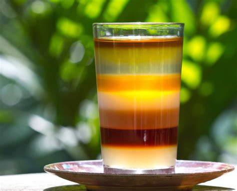
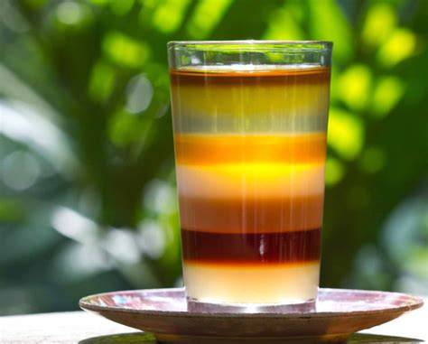

A Bangladesh, a land where a lush green fields stretch endlessly under golden sunsets, where rivers weaves through the heart of the land like silver threads, and where ancient heritage whispers through timeless ruins. From the misty hills of Sylhet to tje serene shores of Cox's Bazar, the world's longest sea beach, this country is a hidden gem for wanderers craving real adventure.
Read More
The Sundarbans, home to the majestic Royal Bangal Tiger, offer a raw, wild experience, while the tea garden of Srimangal feel like something out of a dream. Every corner of Bangladesh is bursting with life- vibrant street markets, colorful rickshaws, the call to prayer echoing the dusk, and the warmest smiles you'll ever meet. If you,re looking for a place that's soulful, scenic and still od the beaten path, Bangladesh is calling you.Trust me, it's not a destination- it's a story you'll want to tell over and over again.
 
